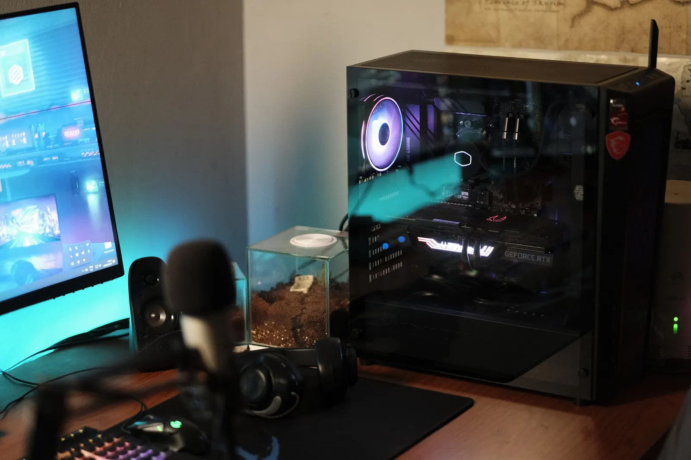

Your stream should feel as solid as your game.
Remote help for OBS problems, encoder overload, dropped frames, blurry output, audio issues and creator-PC performance. This page is for fixing the technical side of streaming.

Streaming problems, without the preset roulette.
Settings depend on the game, hardware, connection and platform. The goal is to identify the actual bottleneck and tune around it.
Choose the level of help you actually need.
These are launch-price starting points for the described scope, not a promise that every problem needs the most expensive option.
Stream Check
- Review symptoms and setup
- Identify likely bottleneck
- Clear next-step recommendation
Stream Tune
- OBS/output tuning
- Encoder, quality and stability work
- Audio and performance checks
Stream Setup
- First-time creator setup
- OBS and output configuration
- Core audio/capture workflow
A short path from problem to stable stream.
Streaming support FAQ
Do I need to be in Pretoria?
No. Streaming and creator technical support is designed to be available remotely across South Africa.
Can you guarantee a specific stream quality?
No. Final quality depends on hardware, game load, internet connection, platform limits and the condition of the system.
Do you need my Twitch or YouTube password?
No. Never send passwords, 2FA codes or stream keys. Those credentials are not required for legitimate technical support.
Start with the problem, not a package.
If you are not sure what you need, run Stream Scan or send a short description of what happens when you go live.